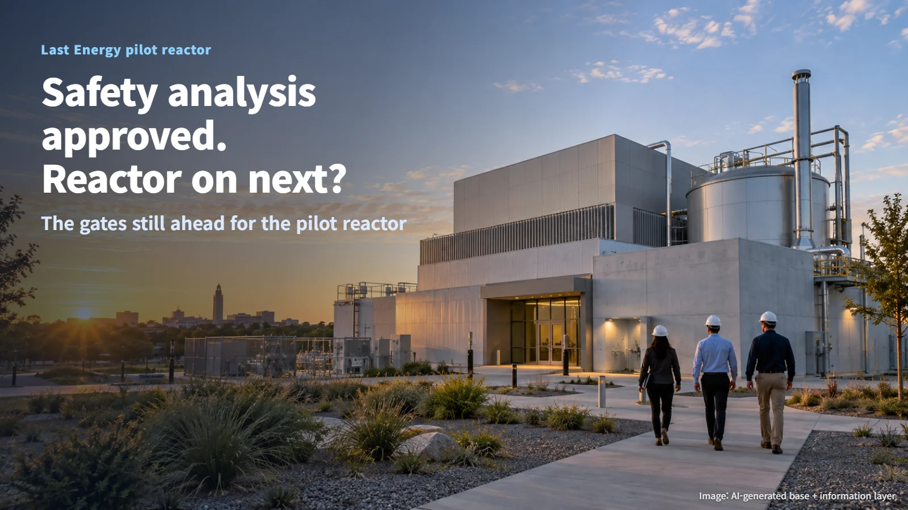
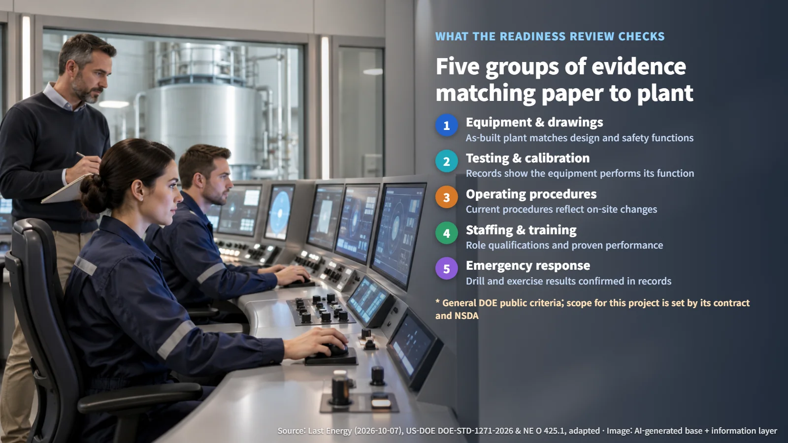
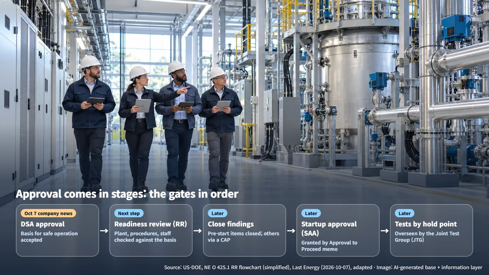

United States · Pilot Reactor Licensing
Safety Analysis Approved: The Next Gates for Last Energy's Pilot Reactor
DOE has approved the Documented Safety Analysis for Last Energy's pilot reactor at Texas A&M RELLIS; a readiness review, startup approval and hold-point testing come next.
When a headline says the U.S. government has approved the safety analysis for a small reactor, a natural question follows: is the reactor about to switch on? The approval is a meaningful step forward, and it completes the paperwork side of the safety case. The next gate checks whether the plant on the ground matches that paperwork, and the decision to start the reactor comes after that.

What a DSA Is: The Basis for Safe Operation
On October 7, 2026, Last Energy announced that the U.S. Department of Energy (DOE) had approved the Documented Safety Analysis (DSA) for its pilot reactor being built at the Texas A&M University RELLIS campus. This is the company's announcement, and the company itself named the next step: a readiness review. Startup approval for criticality (the state in which a fission chain reaction sustains itself) and reactor operation is a separate decision that comes afterward.
A DSA is a document that sets out in detail how a reactor and its facility will be operated safely. It builds on the Preliminary Documented Safety Analysis (PDSA) approved in May 2026. Think of it as a written commitment that binds the design and the safety rulebook together. Technical Safety Requirements (TSRs), the limits and controls that must be observed during operation, are added on top, turning the conclusions of the safety analysis into actual operating rules.
With the DSA approved, DOE has accepted the case that "operating this way is safe"; permission to begin operating is granted at a later gate.
From Paper to Plant: The Readiness Review
A Readiness Review (RR) confirms that the equipment, procedures and people on site are prepared in line with the DSA. DOE's public standard requires the DSA to reflect the facility as actually built, and any difference from the design must be evaluated and recorded for its effect on the safety analysis. Readiness rests on approved drawings and a site configuration that match each other.
The checks that DOE criteria call for fall into five broad groups:
- Equipment and drawings: does the as-built plant match the design requirements and safety functions?
- Testing and calibration: are there test and calibration records showing the equipment performs its function?
- Operating procedures: are current procedures in use that reflect changes made on site?
- Staffing and training: do people hold the qualifications for their roles and show they can actually do the work?
- Emergency response: is the effectiveness of drills and exercises confirmed in records?
(Source: US-DOE, Authorization Pathway for Nuclear Facilities and Verification of Readiness to Startup or Restart Hazard Category 1 and 2 Nuclear Facilities, adapted)
These are the general requirements found in DOE's public documents. Whether this public version has been written into Last Energy's contract has not been confirmed. How they apply in practice is settled by the project's own contract and its Nuclear Safety Design Agreement (NSDA), a document that fixes the design basis and safety analysis methods in advance.
The review can also be carried out in phases. Being ready to receive, store and load fuel is one stage, and readiness for full power operation is confirmed separately. The guidance gives a typical schedule of one week for document review, one week for on-site interviews and performance review, and one week for the final report. That is a general example; Last Energy's own schedule has not been published.
This is the stage where reviewers carry the drawings onto the site and compare them, item by item, against the valves, the instruments and the hands of the operators.

Startup Approval and Hold Points: One Step at a Time
When the RR is complete, a final report is issued. Findings that must be resolved before startup are all closed, and items to be handled after startup are managed through an approved Corrective Action Plan (CAP).
The Safety Basis Approval Authority (SBAA) and the Startup Approval Authority (SAA) play different roles. The DOE standard names the Secretary of Energy as the startup approval authority for new reactors and allows that authority to be delegated, so the actual signatory for this project will be shown in the approval documents. The startup approval authority allows the contractor to start up through an "Approval to Proceed Memorandum."
Power then rises in stages. The startup and commissioning plan contains hold points: pauses at which the results must be checked and approved before moving on to the next test. A Joint Test Group (JTG) oversees the tests, confirming through actual testing that equipment performance matches what the safety analysis predicted and resolving any anomalies.
Picture climbing a staircase one step at a time, stopping at each landing to check. After startup approval, each test still runs in sequence, and every hold point needs its own sign-off.

A Pilot Reactor and a Commercial Plant Are Separate Stages
In an October 2025 announcement, the Texas A&M University System described the site lease, the securing of low-enriched uranium (LEU) core fuel, and the signing of an Other Transaction Agreement (OTA, a form of government agreement distinct from a standard procurement contract) with DOE. The plan is an initial low-power criticality demonstration, followed by grid power generation in a later phase. Fuel delivery and power operation each require their own approvals in the steps ahead.
The company says the pilot reactor uses a full-scale core identical to its commercial design. Its commercial product, the PWR-20, is presented as a 20 MWe-class factory-built nuclear plant. A shared core size is one link between the two; proving the performance of a full commercial plant and completing its approvals are further steps. Moving on to power generation with the PWR-20 requires confirming the scope of approval for that stage, along with its own test and demonstration results.
Running an engine on a test stand and driving a car with that engine down the highway are two different milestones.
Nuclear safety is built up as the paperwork, the plant and the test results lock into place, gate by gate. The next time a headline announces an "approval," asking which gate it belongs to will make the news far easier to read accurately.